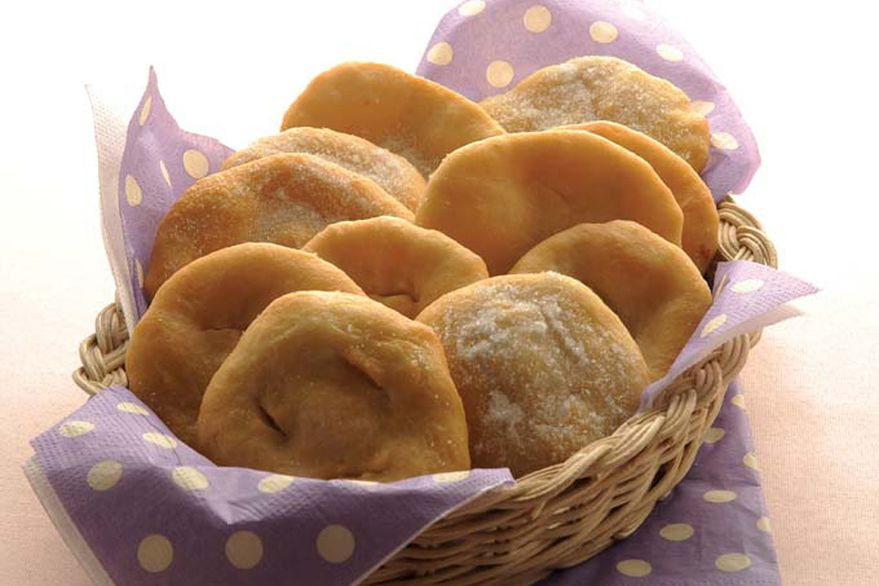

Tortas Fritas
Ingredientes
| Cantidad | Ingrediente |
|---|---|
| 1/2 kg | Harina |
| 4 cdas | Grasa o manteca |
| 2 cditas | Sal |
| c/n | Aceite o grasa para freir |
Paso a Paso
- Poner en un bol la harina cernida y colocar en el centro la grasa a temperatura ambiente.
- Con la punta de los dedos ir tomando la masa, agregando de a poco el agua con la sal y seguir hasta formar un bollo.
- Amasarlo enérgicamente hasta que la masa forme ampollas en su superficie.
- Dejar reposar durante 1 o 2 horas y luego cortar pequeñas pelotitas, achatarlas con la palma de la mano y pincharlas con un tenedor.
- Freírlas enseguida en abundante aceite o grasa muy caliente, retirar con espumadera y colocar sobre papel blanco las torta fritas para que se escurran.
- Espolvorearlas con azúcar molida.
Tener en cuenta
- Salen más esponjas si usas harina leudante o polvo para hornear
- Drisfrutalas con un mate o una chocolatada
- Salen aproximadamente 10 tortas fritas